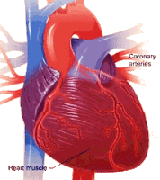

Cardiovascular System:
Sushi contains fish like salmon and tuna, which are rich in omega-3 fatty acids. Omega-3s have been shown to reduce the risk of heart disease and improving cholesterol profiles. Regular consumption of sushi may contribute to better cardiovascular health and reduced risk of heart disease.
Digestive System:
Sushi often includes ingredients like seaweed, ginger, and fermented soy sauce (tamari), which have digestive benefits. Seaweed is rich in fiber, which promotes healthy digestion and regular bowel movements. Ginger has anti-inflammatory properties and aids in digestion by reducing nausea and bloating. Tamari contains beneficial enzymes that support gut health.
Immune System:
Sushi ingredients like raw fish and seaweed are rich in vitamins, minerals, and antioxidants that support immune function. Fish provides essential nutrients such as vitamin D and zinc, which are important for immune health. Seaweed contains vitamins A, C, and E, as well as immune-boosting antioxidants. Regular consumption of sushi may strengthen the immune system and enhance overall health.